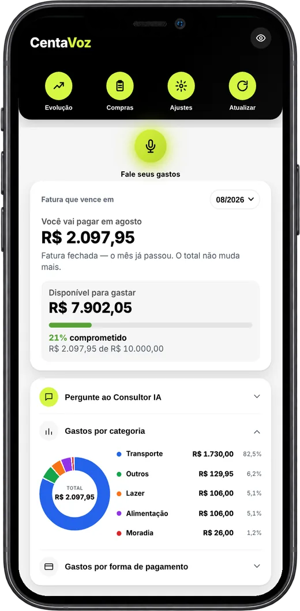

Por que o seu dinheiro some antes do fim do mês?
Responda 4 perguntas e descubra para onde ele está indo, o que isso custa aos seus planos e uma dica de controle de gastos para usar hoje.
O seu resultado
O seu dinheiro escapa pelos gastos pequenos.
Café, Uber, lanche, uma taxa aqui e outra ali. Sozinho, nenhum desses gastos pesa, e por isso nenhum deles é anotado. Somados no fim do mês, eles pesam, e ajudam a explicar por que o seu plano continua ficando para depois.
Por 7 dias, anote só os gastos abaixo de R$ 30. No fim da semana, some tudo e multiplique por 4. O número costuma surpreender, e mostra quanto do mês sai sem você perceber.
Como o CentaVoz resolve isso
Anotar um gasto pequeno passa a levar uma frase. Como é rápido, nada fica de fora, e o gráfico por categoria mostra quanto esses gastos somaram no mês.
“Café, 8 reais, Pix”As parcelas estão comendo os seus próximos meses.
Cada compra parcelada parece pequena na hora. O problema é que elas se acumulam: quando a fatura chega, um pedaço do mês que vem já está comprometido com compras antigas. É dinheiro que já tem dono antes de você receber, e um dos motivos de o seu plano continuar ficando para depois.
Antes da próxima compra parcelada, some todas as parcelas que já estão rodando e veja quanto da próxima fatura já está comprometido. Se esse valor já aperta, a compra nova pode esperar.
Como o CentaVoz resolve isso
Você fala a compra e o parcelamento. Cada parcela entra na fatura certa de cada mês, e a Evolução Mensal mostra quanto os próximos meses já estão comprometidos.
“Geladeira, 2400 reais em 10 vezes, Nubank”O problema não é você. É o método.
Você já tentou controlar pela planilha e desistiu. Não foi preguiça: anotar gasto exigia parar o que você estava fazendo, lembrar o valor e digitar linha por linha. Ninguém sustenta isso no meio da correria. Sem anotar, o dinheiro some sem deixar rastro, e o seu plano continua ficando para depois.
Troque o método, não a força de vontade. Escolha um jeito de anotar que leve menos de 10 segundos e faça na hora do gasto. Deixar para anotar à noite é o que faz a gente esquecer.
Como o CentaVoz resolve isso
Você não digita: toca no microfone e fala o gasto. O app separa valor, cartão e parcela, você confere e salva. Leva poucos segundos, na hora do gasto.
“Uber, 23 reais e 50 centavos, Itaú”Você já tem controle. Falta ele dar menos trabalho.
Você anota os gastos e a fatura não te pega de surpresa. Isso já é mais do que a maioria consegue. O custo está no tempo e na disciplina de manter o hábito todo dia. E quando o hábito falha, o que fica para depois é o seu plano.
Uma vez por mês, olhe só três números: quanto entrou, quanto já está comprometido com parcelas e quanto foi para o seu plano. Se o terceiro ficar em zero por dois meses seguidos, é hora de mudar alguma coisa.
Como o CentaVoz ajuda
Registrar um gasto passa a ser falar uma frase. As faturas por cartão, o gráfico por categoria e as parcelas futuras se montam sozinhos, e o Consultor IA responde perguntas sobre os seus números, em português.
“Mercado, 87 reais e 40 centavos, BTG”
Abre uma demonstração com dados fictícios. Toque no microfone verde e fale um gasto. Sem cadastro e sem instalação.
Lote de fundadores
Para as primeiras 50 pessoas. O preço é menor porque, em troca, queremos ouvir como está sendo o seu uso. Quando as vagas acabarem, o preço passa a ser R$ 197.
ou 12x de R$ 10,03 no cartão
- O app CentaVoz instalado na sua conta Google
- Guia de instalação passo a passo, com as telas
- Consultor IA para ler seus gastos
- Ajuda por e-mail se você travar na instalação
O parcelamento tem juros do cartão: 12x de R$ 10,03 somam R$ 120,36. Você tem 7 dias para pedir o reembolso. Pagamento processado pela Kiwify.
Antes de comprar
Como é a instalação?
A instalação é feita pelo computador, uma única vez. Você segue um guia passo a passo, com as telas, e depois usa só no celular. Não precisa saber mexer em planilha nem em programação.
Preciso instalar alguma coisa no celular?
Não precisa baixar nada da loja de apps. O CentaVoz abre pelo navegador, e você salva um atalho na tela inicial para abrir como um app. Funciona no iPhone e no Android.
Onde ficam os meus dados?
Na sua própria conta Google. Os lançamentos ficam numa planilha no seu Drive. O CentaVoz não tem servidor guardando os seus gastos, e nós não vemos o que você lança.
Se eu não gostar, consigo o reembolso?
Sim. Você tem 7 dias a partir da compra para pedir o reembolso pela Kiwify.
Ficou alguma dúvida? Escreva para contato.centavoz@gmail.com.